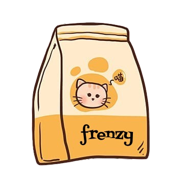

About Our Food
At MeowGourmet, we believe that pets deserve the best. Our food is specially formulated to provide the essential nutrients your cat needs for a healthy and active life. We use only high-quality ingredients, ensuring that every meal is both nutritious and delicious.
Our recipes are crafted with love and care, featuring real meat, wholesome grains, and fresh vegetables. We avoid artificial preservatives and fillers to ensure your pet gets the best possible diet.
Whether your cat prefers wet food or dry kibble, we have a variety of options to satisfy their taste buds. Join us in giving your furry friend the nutrition they deserve!
